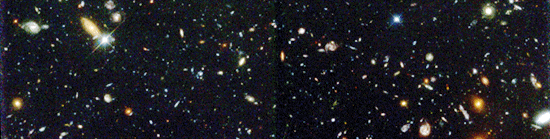
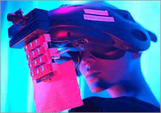

So, what if nothing really happens? What if the world isn't struck by meteors,
destroyed by divine hand or blown to bits by scientists? Well, in the long
run, we might sleep. Not just for the nights, but also during the day. We
might even sleep our entire lives, from birth to death, without ever waking
up. What's more: the survival of our species may depend on it.
Our Universe expands. Ever since the Big Bang blew all matter, space and time into existence, the Universe grows. The Universe expands and cools, much like the fire cloud after an explosion gets bigger and colder. And that's exactly what astronomers see as they study the sky: all stars we see rush away from us and from each other at tremendous speeds.
But
time is ticking. According
to the latest insights, the expanding and cooling of the cosmos will go on and
on and on. Galaxies and stars will be further and further apart. Stars will
slowly become dimmer, as they move out of sight. The night sky will become
darker and darker. And darker still, until there's absolutely nothing to be
seen.
What's more, stars die. After a lifecycle of several to many millions of years (depending on their size), every star is destined to spew out its last bit of energy and collapse, becoming a cold `neutron star', a `white dwarf', or a black hole. As time passes, this will happen to more and more stars, creating a Universe full of burnt out dead stars and black holes.
|  |
And
black holes `eat' other stars. A black hole has such immense gravity, that no
star or planet can resist it. The increasing number of black holes will sweep
the Universe clean, much like the devil in St. John's biblical vision of the
Apocalypse sweeps the stars from the sky with its tail. It will become even
darker still. And oh, by the way, our own Sun will die
too, about 5,000 million years from now.
So
what about us? Suppose man somehow finds a way to survive all these
cataclysmic events. Suppose humanity colonizes other, `safer' planets. And,
for argument's sake, just suppose humanity is somehow able to dodge all those
mean, black holes that scavenge the cosmos. What would life be like?
First,
we would find ourselves in an increasingly cold, numbingly dark surrounding.
We would be truly alone in the Universe.
But
that's not the biggest problem. With the stars and the Sun long gone,
we'll find ourselves in the midst of an energy crisis of unimaginable
proportions. And terrible enough, in all the dark and the cold, we need energy
more than ever.
Just hack up some atoms in a nuclear power plant, you might say. But that's not a good solution. By physical law, the energy within atoms decreases as the Universe expands.
And,
bizarre as it may sound, the supply of atoms is ultimately limited. The matter
on our planet is, of course, finite. And in the nothingness of the faded-out
Universe, matter is hard to get at. It's either beyond reach or eaten up by
black holes. And there's no more particles raining down on our planet from
solar radiation, meteors or cosmic dust.
In the long run, we have to come up with something to adapt to our new environment. And `adapting' means more than getting used to cold feet and being able to see in total darkness: it means cutting drastically on our energy bill.
First,
we'll have to get rid of our bodies. No, really!
Our carbon-based bodies are very vulnerable to cold. They get damaged even
when temperatures drop only a few degrees. It's absolutely certain there's no
way life as we know it can survive for a substantial period of time in an
expanded Universe.
But that's no big deal, Princeton physicist Freeman Dyson and many others suggest. We `only' have to transport our consciousness into something else. A cyborg, an interstellar cloud of particles maybe -- with one hundred trillion years ahead, we have plenty of time to come up with something.
|  |
So
okay. Grudgingly, you've turned yourself into a cyborg. But in the long run,
even that isn't enough. For one thing, thought itself costs energy. Just think
of your computer doing its calculations: the thing simply wouldn't run if
you didn't have it connected to a power source.
And
what's worse, the universe gets colder still. This brings out other, very
weird physical problems of its own. The speed of thought will drastically
decline in extreme cold, Dyson demonstrated. So there you are, you've decided
to become a cyborg, and now you find out you're sooooo slooow-witted.
And
when temperatures drop even further, there's more trouble facing us poor
former humans. It'll be so cold, even a cyborg would get into trouble. A point
comes when organisms cannot lower their temperatures any further without
becoming less complex -- in effect, dumbing down. Before long, life could no
longer be regarded as intelligent.
It's
here where sleep comes into play. As Dyson calculates, there's only one
possibility to survive. We'd hibernate. By sleeping, our metabolic rates will
drop, and we will be able to achieve an ever-lower body temperature. In fact,
by spending an increasing fraction of our time asleep, eternal life would
indeed be possible.
So
you've become a slow-thinking robot that's asleep most of the time.
Still, even that may not be enough. For example, what kind of alarm clock
would you set to wake you up? Your alarm clock would have to operate reliably
for a long, long time, using less and less energy. A curious but,
scientifically speaking, dead serious problem, that no physicist has been able
to answer yet.
And
then there's the problem of thought. In the early 1980s, computer researchers
realized that in principle it's possible to design a computer that doesn't
dissipate energy while processing information. Isn't that great news for all
those dormant cyborgs to come?
No,
it isn't. To function, this computer -- that only is a theoretical possibility
so far -- must never, NEVER discard any information. If it does discard only
one bit of information, it will be like pulling the plug out of a bath tub: it
would use up energy while calculating for ever more.
But
thoughts are finite. Information is by definition stored in a finite
amount of particles. Even in your cyborg brain, there will come a point where
you would have to discard old information in order to store something new. And
that IS a problem.
`All
organisms would ever do is relive the past, having the same thoughts over and
over again,' cosmologists Lawrence M. Krauss and Glenn D. Starkman estimate.
`Eternity would become a prison, rather than an endlessly receding horizon of
creativity and exploration. It might be nirvana, but would it be living?'
Nope.
Probably not. There you go, Mr. Cyborg: constantly asleep, and when awake only
rethinking old thoughts.
Perhaps
it's best our world is swallowed by one of those big, mean Black Holes after
all.
 |
 |